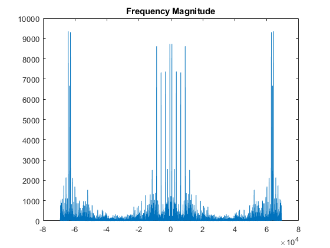

Contents
clear;
close all;
clc;
Question one, Part A
M=55;
wp=0.2*pi;
ws=0.4*pi;
Rp_1=0.25;
wc=(wp+ws)/2;
w_Black=blackman(M)';
hd=ideal_lp(wc,M);
n=[0:1:M-1];
h = hd .* w_Black;
hblack=h;
[db,mag,pha,grd,w] = freqz_m(h,[1]);
delta_w = 2*pi/1000;
Rp_blackman = -(min(db(1:1:wp/delta_w+1)))
As_Blackman = -round(max(db(ws/delta_w+1:1:501)))
figure(1)
stem(n,h);
title('Filter Impulse Response')
axis([0 M-1 -0.1 0.3]); xlabel('n'); ylabel('h(n)')
figure(2)
stem(n,hd);
title('Ideal Impulse Response')
xlabel('n');
ylabel('hd(n)');
figure(3)
stem(n,w_Black);
title('Blackman Window')
xlabel('n');
ylabel('w(n)');
figure(4)
plot(w/pi,db);
grid on
title('Magnitude Response in dB')
xlabel('Normalized Frequency');
ylabel('dB');
Rp_blackman =
0.0040
As_Blackman =
71
Question one, Part B
M2=38;
beta=5.65326;
n2=[0:1:M2-1];
hd=ideal_lp(wc,M2);
wk= (kaiser(M2,beta))';
h = hd .* wk;
hkaiser=h;
[db1,mag1,pha1,grd1,w1] = freqz_m(h,[1]);
delta_w = 2*pi/1000;
As_kaiser = -round(max(db1(ws/delta_w+1:1:501)))
figure(5)
stem(n2,h);
title('Filter Impulse Response')
axis([0 M2-1 -0.1 0.3]); xlabel('n'); ylabel('h(n)')
figure(6)
stem(n2,hd);
title('Ideal Impulse Response')
xlabel('n');
ylabel('hd(n)');
figure(7)
stem(n2,wk);
title('Kaiser Window')
xlabel('n');
ylabel('w(n)');
figure(8)
plot(w1/pi,db1);
grid on
title('Magnitude Response in dB')
xlabel('Normalized Frequency');
ylabel('dB');
As_kaiser =
60

Question one, Part C,Q3
[y,Fs] = audioread('HW3_Q1_multi_tone.wav');
n=length(y);
y=y(Fs:2*Fs);
y=y';
fftsignal=fft(y);
fftsignal = fftshift(fftsignal);
f=Fs/2*linspace(-pi,pi,length(fftsignal));
figure(9)
plot(f,abs(fftsignal))
title('Frequency Magnitude')
output=filter(hblack,[1],y);
outft=fft(output);
outft=fftshift(outft);
figure(10)
plot(f,abs(outft))
title('Frequency Domain(Magnitude),with Blackman window')
output=filter(hkaiser,[1],y);
outft=fft(output);
outft=fftshift(outft);
figure(11)
plot(f,abs(outft))
title('Frequency Domain(Magnitude),with kasier window')

Part C,Q4
M3=9;
w_rect=boxcar(M3)';
hd=ideal_lp(wc,M3);
n=[0:1:M3-1];
h = hd .* w_rect;
hrect=h;
[db2,mag2,pha2,grd2,w2] = freqz_m(h,[1]);
delta_w = 2*pi/1000;
Rp_rect = -(min(db2(1:1:wp/delta_w+1)))
As_rect = -round(max(db2(ws/delta_w+1:1:501)))
output=filter(hrect,[1],y);
outft=fft(output);
outft=fftshift(outft);
figure(12)
plot(f,abs(outft))
title('Frequency Domain(Magnitude),with rect window')
Rp_rect =
2.0001
As_rect =
18